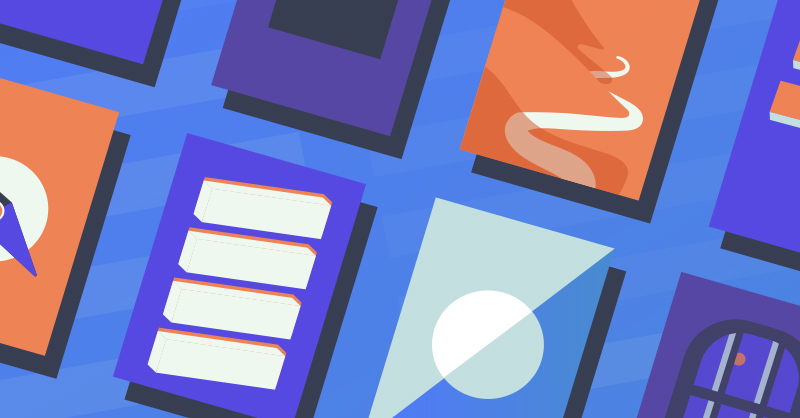
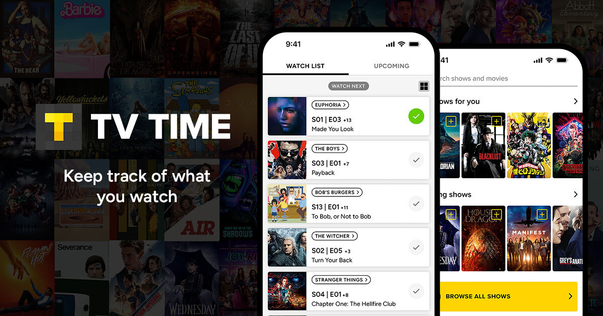
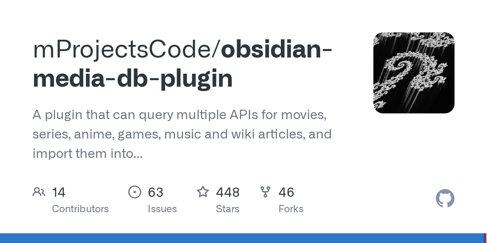
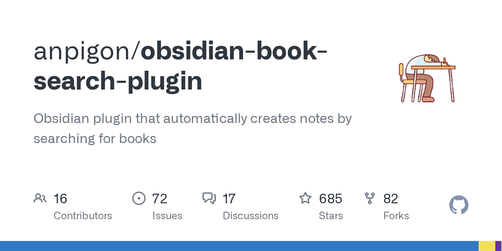
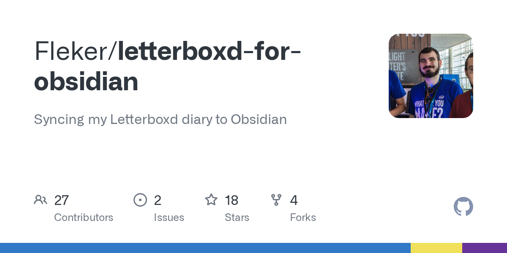
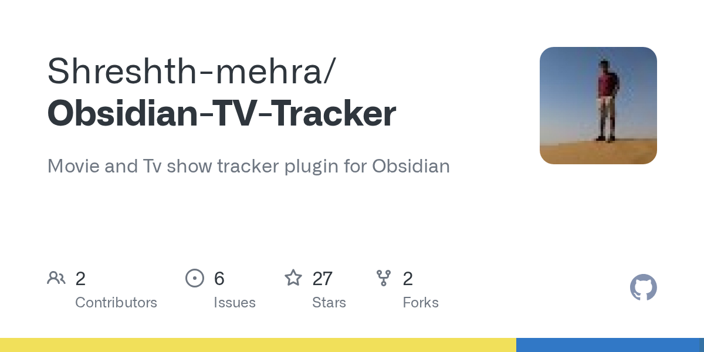
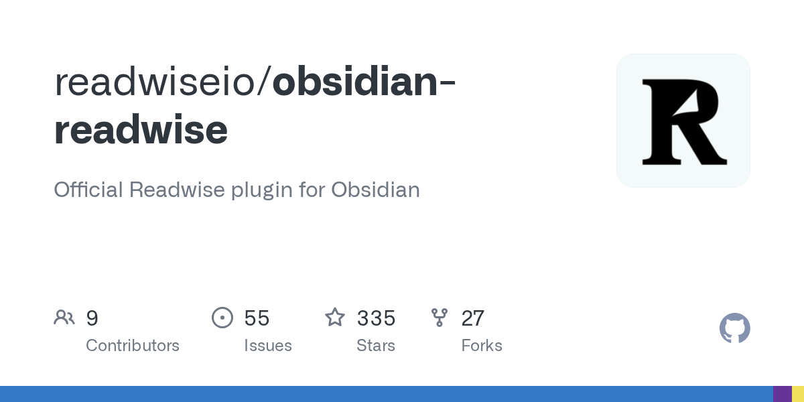
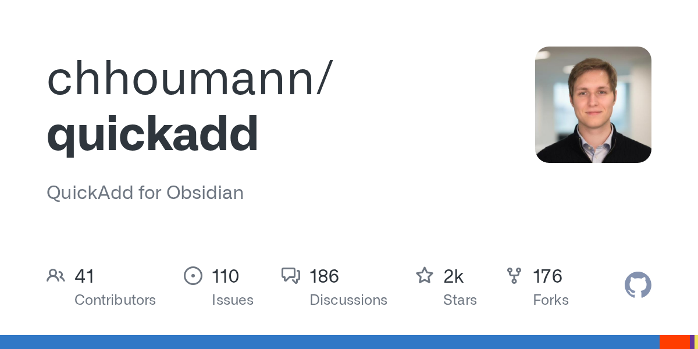
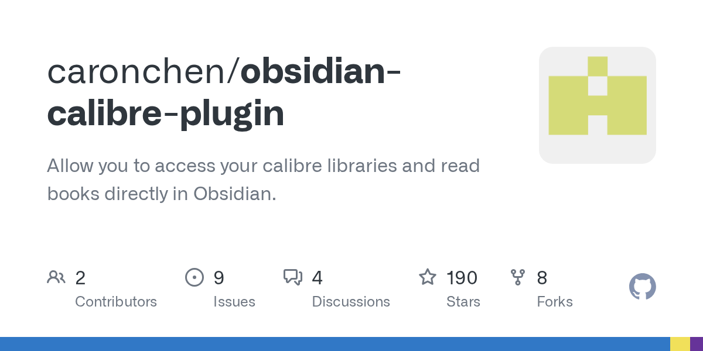
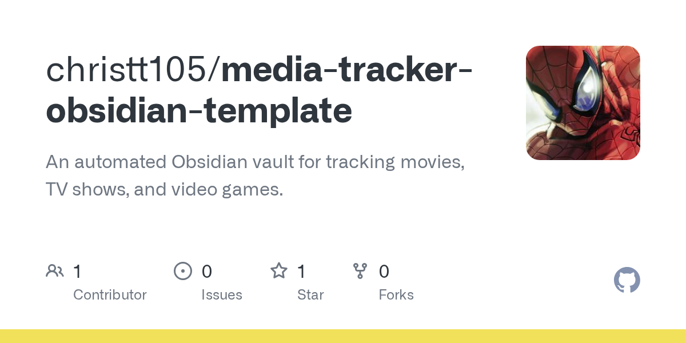

⊠ Catalog · Books · Film · TV · 2026
Your media, on three shelves.
Treat tracking as a 3-layer pipeline, not a single app. Pick a hub per medium, automate capture so you never log manually, then mirror into Obsidian for prose and Dataview dashboards. The shelves below are stocked with the 2026 picks — and the duds to leave on the floor.
01The pipeline
Picking these in the wrong order is the most common failure mode — beautiful Dataview dashboards with nothing flowing in.
1
Hub · source of truth
The Library
Where "what I've read / watched / want to" actually lives. Optimised for big lists, fast search, public-API access. Don't conflate with your vault.
→ Hardcover for books · Simkl for film & TV
2
Capture · auto-detect
The Scrobbler
Detects activity and pushes to the hub. Browser extensions, media-server bridges, mobile listeners. If you're typing it, automation has failed.
→ CrossWatch · Simkl Jellyfin · Readwise
3
Render · prose & query
The Vault
Obsidian renders metadata + your notes for search, linking, and Dataview dashboards[27]. The vault is a mirror, not the master.
→ Media DB · Book Search · Letterboxd RSS
02The Book shelf
Free hubs in 2026. Goodreads is on the floor.
Curator's note. Hardcover is the only free hub with a real public API in 2026[10] — that's what makes it the "Letterboxd for books" backbone. StoryGraph reads better but is a dead-end for automation: solo dev, no API ETA[11]. Goodreads has been closed to new API keys since 2020[26].
StoryGraph
Hub · Books · No API
Best-in-class mood-based recs and reading stats[14]. CSV export only[12]; an unofficial scraper exists[13] but breaks on UI changes.
FREENO API⌥ CSV
SKIP 2026

$9.99/mo03The Film & TV shelf
The 2026 inflection: Trakt's 100-item free cap pushed everyone to Simkl.
Curator's note. Pick Simkl as the automation backbone[5]. Trakt's free 100-item watchlist+collection cap[4] is the headline 2026 change — multi-year history is an instant disqualification. Keep Letterboxd alongside for film opinions (reviews, lists), since Simkl's social side is thin.
100 ITEM CAP
FILM CULT
Letterboxd
Diary · Film community · RSS only
Best film community + reviews on the planet[5]. No public API — public RSS feed exposes the diary[8]. Manual logging only.
FREENO API⌥ RSS

04The Scrobblers
The layer most people skip and then complain "tracking is too much work."
Plex / Jellyfin / Emby→Simkl + Trakt + AniList
CrossWatch ⭐ 568
Self-hosted Docker — ghcr.io/cenodude/crosswatch:latest. v0.9.18 (Apr 2026) deprecated webhooks → "Watcher" sync engine[7]. The 2026 standard for self-hosters.
Jellyfin→Simkl
Simkl Jellyfin add-on
Native; pings the Simkl API once a configured watch-percentage is hit (e.g. 70%)[24].
Netflix / Hulu / Crunchyroll→Simkl
Simkl Browser Extension
More reliable than Trakt's Universal Scrobbler equivalent[4].
Mobile (iOS / Android)→Trakt + Simkl
wako
The only mobile app supporting both Trakt and Simkl backends in dual sync[25].
Kindle / Apple Books / Pocket→Obsidian
Readwise plugin ⭐ 335
Auto-syncs highlights from Kindle, Apple Books, Pocket, PDFs[15] on app open or scheduled[16].
05The Vault shelf
Plugins that pull metadata into your notes. All write YAML frontmatter — Dataview reads it.
Curator's note. Media DB wins on coverage (10 APIs, one workflow[18]) and recency. Book Search wins on book-specific polish (cover-image download, mature template variables[3]). Books-only? Book Search. Everything-in-one? Media DB. Layer Dataview + Templater + QuickAdd[27] over either and the vault becomes a queryable dashboard.

PICK
685★Book Search
Obsidian plugin · Books-only
Books-only, Templater-friendly, downloads covers locally[3]. Last release Oct 2024 — slowing.
FREE⌥ GOOGLE BOOKS · NAVER

Letterboxd RSS Sync
Obsidian plugin · Diary mirror
Mirrors last 50 diary entries into one Letterboxd Diary.md note[8]. Active (Nov 2025).
FREE⌥ RSS

Obsidian-TV-Tracker
Obsidian plugin · Grid view
Grid view of films/shows backed by YAML markdown files[19]. Pulls TMDB metadata. Active.
FREE⌥ TMDB

Readwise (official)
Obsidian plugin · Highlights + book metadata
Highlights + book metadata from Kindle / Apple Books / Pocket etc.[16]. Active (Apr 2026).
PAIDOFFICIAL

2.2k★
2023Calibre plugin
Obsidian plugin · Calibre OPDS browser
Browse a Calibre Content Server inside Obsidian[22]. Unpushed since Sep 2023 — use at own risk.
FREESTALE

christt105/media-tracker-template
Reference vault · Working starter
A working starter vault wiring Movie Search + Templater + QuickAdd together[28]. Useful as a reference even if you don't fork.
FREE⌥ STARTER
06Three concrete 2026 stacks
Pick the row that matches your setup. Don't mix tiers — each is internally consistent.
Tier · Minimalist
Obsidian-only, no external services
Cost: $0 · two free API keys
★ Tier · Hybrid · Recommended
Hubs do storage, Obsidian mirrors
Cost: $9.99/mo Readwise[17] · rest free
BooksHardcover hub[9] + Readwise highlights[15] → Book Search plugin for vault notes + a custom GraphQL puller from Hardcover.
Film/TVSimkl hub[4] + Simkl browser extension + Letterboxd for opinions → Letterboxd RSS Sync[8]; Media DB for per-title metadata.
WhyThe hub does what Obsidian is bad at — 1,000+ entries with sort/filter — and Obsidian does what hubs are bad at — your prose.
Tier · Power-user
Self-hosted media server
Cost: Plex Pass + $9.99/mo Readwise · everything else free
07Out of stock for 2026
The stuff to leave on the floor — and why.
⚠ DEAD-END
Goodreads as a hub. API closed to new keys since 2020[26]. 2026 reviews unanimously recommend leaving.
⚠ CAPPED
Trakt for a fresh free account. The 100-item watchlist+collection cap[4] breaks a multi-year backlog on day one. Existing VIP users are fine; new free users default to Simkl.
⚠ MANUAL
Hand-logging Plex/Jellyfin films. CrossWatch[6] takes ~30 minutes to set up and never asks you to type a film title again.
⚠ LAYER MIX
Storing the master list in Obsidian. Obsidian is excellent for note-taking, mediocre for "give me my last 200 watched films sorted by rating across 5 services" — let the hub do that.
About this catalog
One alternate view of the canonical research page. The default page has the full prose and tables. This view foregrounds the picks per medium as a tiled catalog.
Format: catalog (poster grid) · 30 citations · 7 min read